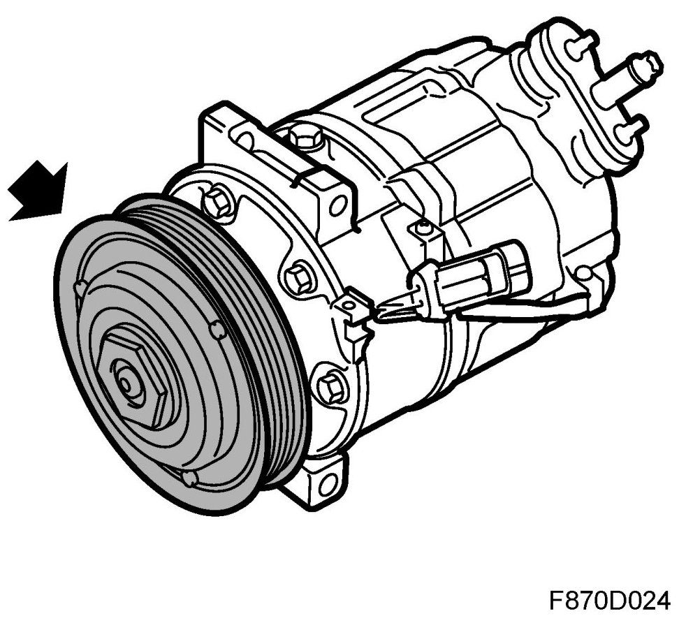
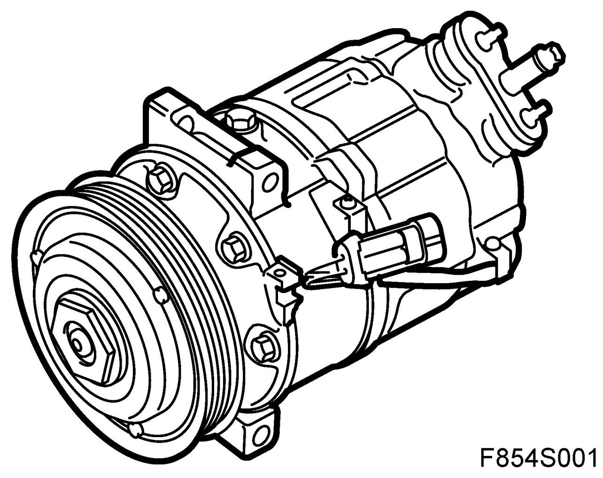
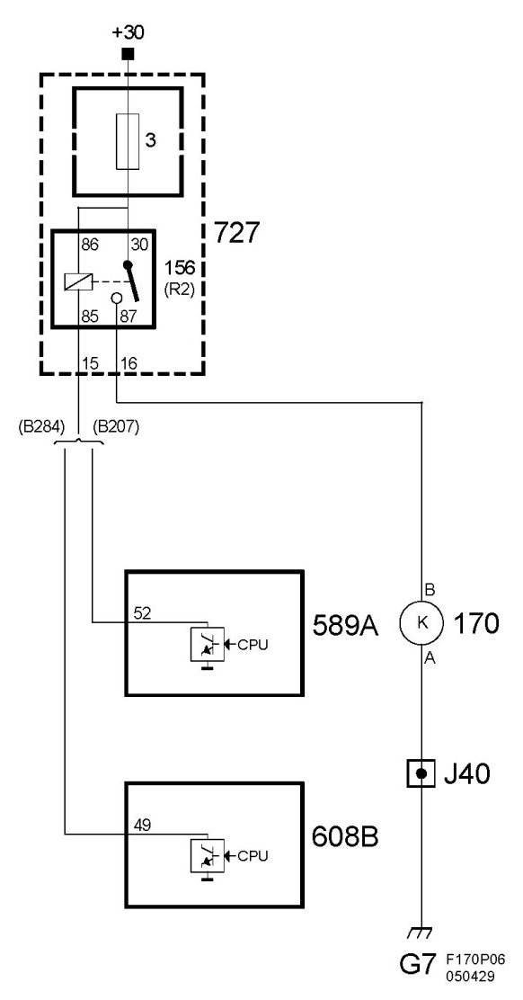
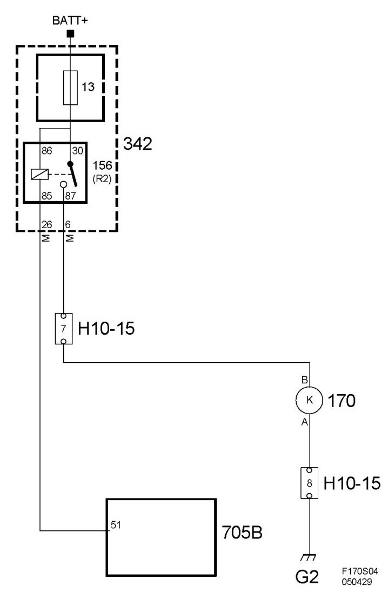
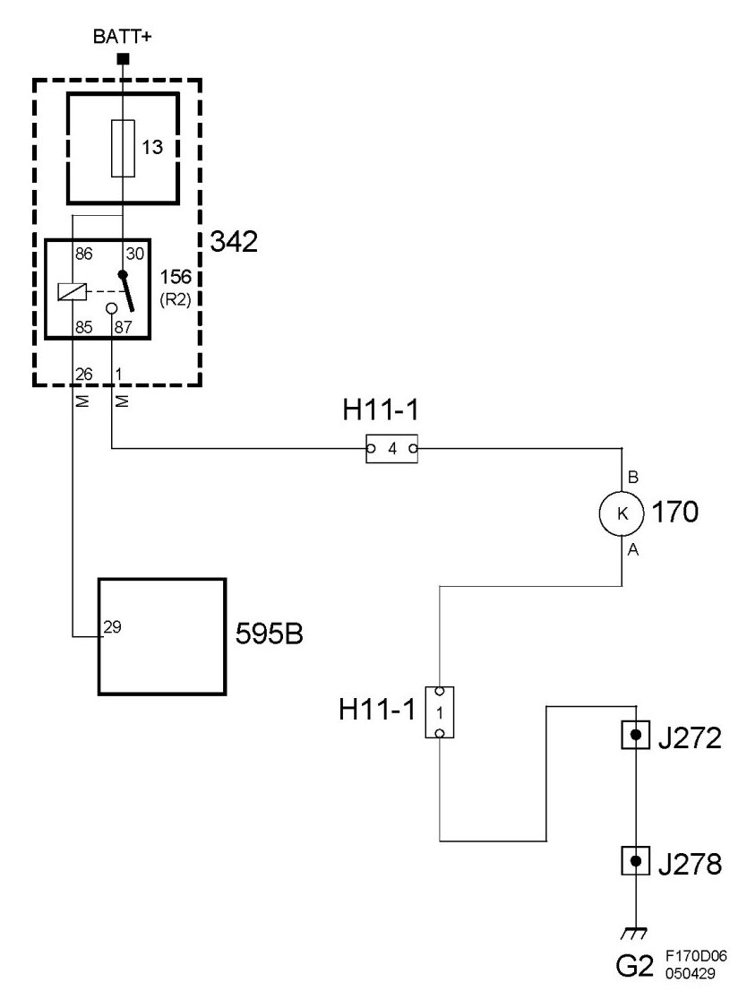

Compressor HVAC: Description and Operation
Compressor, A/C (170)
Location
Compressor, A/C (170).
Main task
The A/C compressor's electromagnetic clutch connects the belt pulley driven by the belt circuit and the A/C compressor's shaft.

Type
The compressor clutch consists of a coil, belt pulley and follower. When the coil is supplied with voltage, the belt pulley and follower are coupled together as one unit.

Connection, petrol engine B207, B284
The compressor clutch is activated through a voltage feed from relay 156 in the underhood electric centre (727) and is grounded through grounding point G7.

Connection, Z18XE petrol engine
The compressor clutch is activated through a feed from relay 156 in the engine bay main fuse box (342) and is connected to ground through grounding point G2.

Connection, Z19DT/DTH diesel engine
The compressor clutch is activated through a feed from relay 156 in the engine bay main fuse box (342) and is connected to ground through grounding point G2.
